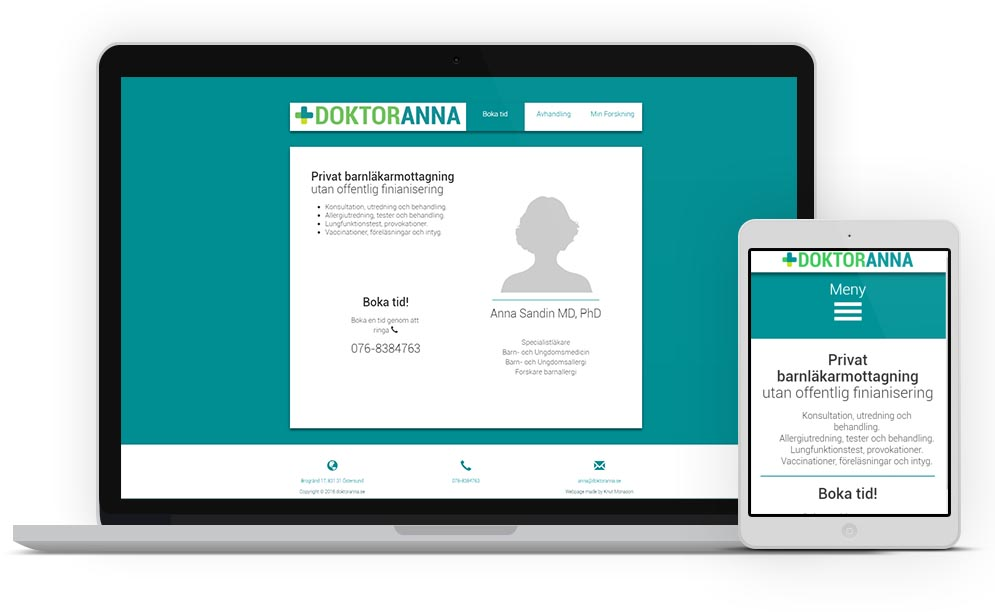

2015-2016
:
Website and brand

Task
The client's main request was to update the current site while maintaining the copywriting and structure of the current one, keeping it simple.
- Update the current website
- Design a new logo
- Hosting and maintenance
Call to action
The main objective for the page is to inform the user about the booking service.
Which is made through a phone number. This number was given a central place in the front page layout.
Call to action
The main objective for the page is to inform the user about the booking service.
Which is made through a phone number. This number was given a central place in the front page layout.
Process
Target group
The main user is local parents. I kept that in mind selecting the big and clear font type.
Tools
For this project I tried out making the site dynamic using PHP to replace the content. This makes swapping pages almost instant in comparison with a static html page.